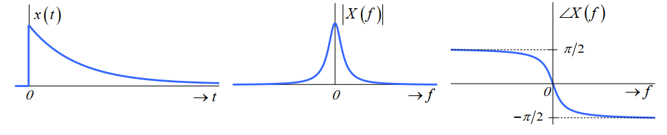
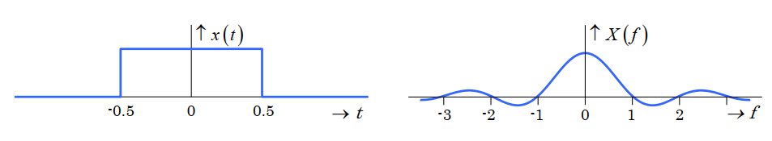
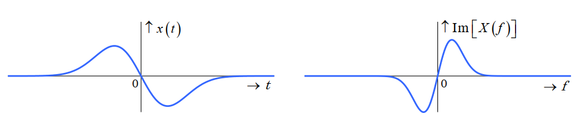
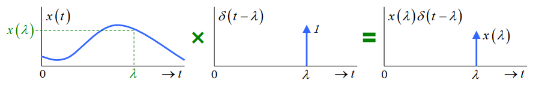
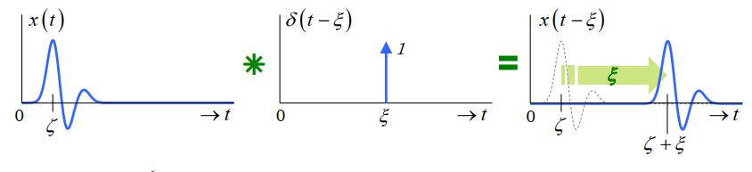
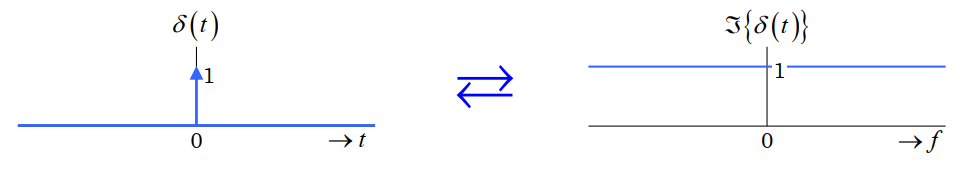

<!DOCTYPE html>


<html lang="zh-CN,en,default">


<head>
  <meta charset="utf-8" />
    
  <meta name="viewport" content="width=device-width, initial-scale=1, maximum-scale=1" />
  <title>
    信号与系统学习笔记#3 |  清柠
  </title>
  <meta name="generator" content="hexo-theme-ayer">
  
  <link rel="shortcut icon" href="/favicon.ico" />
  
  
<link rel="stylesheet" href="/dist/main.css">

  
<link rel="stylesheet" href="https://cdn.jsdelivr.net/gh/Shen-Yu/cdn/css/remixicon.min.css">

  
<link rel="stylesheet" href="/css/custom.css">

  
  
<script src="https://cdn.jsdelivr.net/npm/pace-js@1.0.2/pace.min.js"></script>

  
  

  

<link rel="alternate" href="/atom.xml" title="清柠" type="application/atom+xml">
</head>

</html>

<body>
  <div id="app">
    
      
    <main class="content on">
      <section class="outer">
  <article
  id="post-2021-02-20-01"
  class="article article-type-post"
  itemscope
  itemprop="blogPost"
  data-scroll-reveal
>
  <div class="article-inner">
    
    <header class="article-header">
       
<h1 class="article-title sea-center" style="border-left:0" itemprop="name">
  信号与系统学习笔记#3
</h1>
 

    </header>
     
    <div class="article-meta">
      <a href="/2021/02/20/2021-02-20-01/" class="article-date">
  <time datetime="2021-02-20T06:28:15.000Z" itemprop="datePublished">2021-02-20</time>
</a> 
  <div class="article-category">
    <a class="article-category-link" href="/categories/%E8%AF%BE%E7%A8%8B%E5%AD%A6%E4%B9%A0%E7%AC%94%E8%AE%B0/">课程学习笔记</a>
  </div>
  
<div class="word_count">
    <span class="post-time">
        <span class="post-meta-item-icon">
            <i class="ri-quill-pen-line"></i>
            <span class="post-meta-item-text"> 字数统计:</span>
            <span class="post-count">929</span>
        </span>
    </span>

    <span class="post-time">
        &nbsp; | &nbsp;
        <span class="post-meta-item-icon">
            <i class="ri-book-open-line"></i>
            <span class="post-meta-item-text"> 阅读时长≈</span>
            <span class="post-count">5 分钟</span>
        </span>
    </span>
</div>
 
    </div>
      
    <div class="tocbot"></div>


  
    <div class="article-entry" itemprop="articleBody">
       
  <br>

<a id="more"></a>

<h1 id="傅里叶变换"><a href="#傅里叶变换" class="headerlink" title="傅里叶变换"></a>傅里叶变换</h1><ul>
<li><p>不同于周期信号，非周期信号具有连续的频谱。</p>
</li>
<li><p>一个非周期信号\(x(t)\)的连续频谱（continuous-frequency spectrum），可以用其傅里叶变换\(X(f)\)来表示。这是傅里叶级数在\(T_p\rightarrow\infty,\ k\rightarrow\infty\)和\(k/T_p\rightarrow f\)的极限情况。</p>
</li>
<li><p>\(x(t)\)和\(X(f)\)的关系：</p>
<p>\[<br>\mbox{Forward | t-domain to f-domain} \quad X(f)=\int_{-\infty}^{\infty}\exp(-j2\pi ft)\mathrm{d}t<br>\\<br>\mbox{Inverse | f-domain to t-domain} \quad x(t)=\int_{-\infty}^{\infty}\exp(j2\pi ft)\mathrm{d}f<br>\]</p>
</li>
<li><p>Dirichlet’s Conditions</p>
<p>要使得\(x(t)\)的傅里叶变换存在，以下几个条件需要被满足：</p>
<ul>
<li>On any finite interval<ul>
<li>\(x(t)\) is bounded</li>
<li>\(x(t)\) has a finite number of minima and maxima</li>
<li>\(x(t)\) has a finite number of discontinuities</li>
</ul>
</li>
<li>\(x(t)\) is absolutely integrable</li>
</ul>
</li>
</ul>
<h1 id="傅里叶变换的性质"><a href="#傅里叶变换的性质" class="headerlink" title="傅里叶变换的性质"></a>傅里叶变换的性质</h1><p>规定</p>
<p>\[<br>\begin{cases}<br>X(f) = \Im \{x(t)\}\ &amp;\mbox{denote the Fourier transform of}\ x(t)<br>\newline<br>x(t) \rightleftarrows X(f)\ &amp;\mbox{denote a Fourier transform pair}<br>\end{cases}<br>\]</p>
<ul>
<li><p>Linearity</p>
<p>\[<br>\alpha x_1(t) + \beta x_2(t) \rightleftarrows \alpha X_1(f) + \beta X_2(f)<br>\]</p>
</li>
<li><p>Time Scaling</p>
<p>\[<br>x(\beta t) \rightleftarrows \frac{1}{\lvert \beta \rvert}X(\frac{f}{\beta})<br>\]</p>
</li>
<li><p>Duality</p>
<p>\[<br>X(t) \rightleftarrows x(-f)\ \mbox{or}\ X(-t) \rightleftarrows x(f)<br>\]</p>
</li>
<li><p>Time Shifting</p>
<p>\[<br>x(t-t_0) \rightleftarrows X(f)\exp(-j2\pi ft_0)<br>\]</p>
</li>
<li><p>Frequency Shifting (Modulation)</p>
<p>\[<br>x(t)\exp(j2\pi f_0t) \rightleftarrows X(f-f_0)<br>\]</p>
</li>
<li><p>Differentiation in the Time Domain</p>
<p>\[<br>\frac{\mathrm{d}}{\mathrm{d} t}x(t) \rightleftarrows j2\pi f\cdot X(f)<br>\]</p>
</li>
<li><p>Integration in the Time Domain</p>
<p>\[<br>\int_{-\infty}^tx(\tau)\mathrm{d}\tau \rightleftarrows \frac{1}{j2\pi f}X(f) + \frac{1}{2}X(0)\delta (f)<br>\]</p>
</li>
<li><p>Convolution in the Time Domain (or Multiplication in the Frequency Domain)</p>
<p>\[<br>\underbrace{\int_{-\infty}^{\infty} x_1(\zeta) x_2(t-\zeta) \mathrm{d} \zeta}_{x_1(t) * x_2(t)} \rightleftarrows X_1(f) X_2(f)<br>\]</p>
</li>
<li><p>Multiplication in the Time Domain (or Convolution in the Frequency Domain)</p>
<p>\[<br>x_1(t) x_2(t) \rightleftarrows \int_{-\infty}^{\infty} X_1(\zeta) X_2(f-\zeta)\mathrm{d} \zeta<br>\]</p>
</li>
</ul>
<h1 id="REAL-Signal-的频谱性质"><a href="#REAL-Signal-的频谱性质" class="headerlink" title="REAL Signal 的频谱性质"></a>REAL Signal 的频谱性质</h1><ul>
<li><p>\(x(t)\) is REAL:</p>
<p>此时\(x^*(t) = x(t)\)，</p>
<p>\[<br>\underbrace{X^*(f) = X(-f)}_{X(f)\ \mbox{is Conjugate Symmetric}}\quad \underbrace{\lvert X(f) \rvert = \lvert X(-f) \rvert }_{\mbox{EVEN Symmetry}}\quad \underbrace{\angle X(f) = -\angle X(-f)}_{\mbox{ODD Symmetry}}<br>\]</p>
</li>
</ul>
<p></p>
<ul>
<li><p>\(x(t)\) is REAL and EVEN:</p>
<p>此时\(x^*(t) = x(t)\mbox{ and }x(t) = x(-t)\)，</p>
<p>\[<br>\underbrace{\overbrace{X^*(f) = X(f)}^{\mbox{Real}}\ \mbox{and}\ \overbrace{X(f) = X(-f)}^{\mbox{Even}}}_{X(f)\ \mbox{is REAL and EVEN}}<br>\]</p>
</li>
</ul>
<p></p>
<ul>
<li><p>\(x(t)\) is REAL and ODD:</p>
<p>此时\(x^*(t) = x(t)\mbox{ and }x(-t) = -x(t)\)，</p>
<p>\[<br>\underbrace{\overbrace{X^*(f) = -X(f)}^{\mbox{Imaginary}}\ \mbox{and}\ \overbrace{X(f) = -X(-f)}^{\mbox{Odd}}}_{X(f)\ \mbox{is IMAGINARY and ODD}}<br>\]</p>
</li>
</ul>
<p></p>
<p>上述这些结论同样适用于傅里叶级数的系数。</p>
<h1 id="Dirac-δ-和周期信号的频谱"><a href="#Dirac-δ-和周期信号的频谱" class="headerlink" title="Dirac-δ 和周期信号的频谱"></a>Dirac-δ 和周期信号的频谱</h1><h2 id="The-Continuous-time-Unit-Impulse-Dirac-δ-function"><a href="#The-Continuous-time-Unit-Impulse-Dirac-δ-function" class="headerlink" title="The Continuous-time Unit Impulse (Dirac-δ function)"></a>The Continuous-time Unit Impulse (Dirac-δ function)</h2><p>定义：</p>
<p>\[<br>\delta (t) =<br>\begin{cases}<br>\infty;\ t=0<br>\newline<br>0;\ t\neq 0<br>\end{cases}<br>\ \mbox{and}\<br>\int_{-\varepsilon}^{\varepsilon}\delta (t) \mathrm{d}t = 1;\ \forall \varepsilon &gt; 0<br>\]</p>
<p>\(\delta (t)\)的性质：</p>
<ol>
<li><p>Symmetry: \(\delta (t) = \delta (-t)\)</p>
</li>
<li><p>Sampling: \(x(t)\delta (t-\lambda ) = x(\lambda)\delta (t-\lambda )\)</p>
</li>
</ol>
<p></p>
<ol start="3">
<li><p>Sifting: \(\int_{-\infty}^{\infty}x(t)\delta (t-\lambda )\mathrm{d} t = x(\lambda )\int_{-\infty}^{\infty}\delta (t-\lambda )\mathrm{d} t = x(\lambda)\)</p>
</li>
<li><p>Replication: \(x(t)*\delta (t-\xi ) = \int_{-\infty}^{\infty}x(\xi )\delta (t-\zeta -\xi )\mathrm{d}\zeta = \int_{-\infty}^{\infty}x(\zeta) \delta (\zeta - (t - \xi ))\mathrm{d}\zeta = x(t-\xi ) \\ \mbox{Note: }x(t)*\delta (t) = x(t)\)</p>
</li>
</ol>
<p></p>
<ol start="5">
<li>White Spectrum: \(\Im \{\delta (t)\} = \int_{-\infty}^{\infty}\delta (t)\exp (-j2\pi ft) \mathrm{d} t = 1\)</li>
</ol>
<p></p>
<h2 id="周期信号的频谱"><a href="#周期信号的频谱" class="headerlink" title="周期信号的频谱"></a>周期信号的频谱</h2><p>在 unit impulse function 的帮助下，可以在周期信号上使用傅里叶变换来获取它的连续频谱。</p>
<ul>
<li><p>DC</p>
<p>\[<br>[x(t) = K] \rightleftarrows [X(f) = K\delta (f)]<br>\]</p>
</li>
<li><p>Complex Exponential</p>
<p>\[<br>[x(t) = K\exp (j2\pi f_0 t)] \rightleftarrows [X(f) = K \delta (f - f_0)]<br>\]</p>
</li>
<li><p>Cosine</p>
<p>\[<br>[x(t) = K\cos (2\pi f_0 t)] \rightleftarrows \left [X(f) = \frac{K}{2} \delta (f - f_0) + \frac{K}{2} \delta (f + f_0) \right ]<br>\]</p>
</li>
<li><p>Sine</p>
<p>\[<br>[x(t) = K\sin (2\pi f_0 t)] \rightleftarrows \left [\begin{split}X(f) &amp;= \frac{K}{j2}\delta (f - f_0) - \frac{K}{j2}\delta(f+f_0)]\\&amp;=\frac{K}{2}\exp(-j\frac{\pi}{2})\delta (f - f_0) + \frac{K}{2}\exp(j\frac{\pi}{2}\delta (f + f_0))\end{split} \right ]<br>\]</p>
</li>
<li><p>Arbitrary periodic signals</p>
<p>\[<br>\left [x_p(t) = \sum_{k=-\infty}^{\infty}c_k\exp(j2\pi\frac{k}{T_p}t) \right ] \rightleftarrows \left [X_p(f) = \sum_{k=-\infty}^{\infty}c_k\delta (f - \frac{k}{T_p}) \right ]<br>\]</p>
<p>要求得周期信号\(x_p(t)\)的傅里叶变换\(X_p(f)\)，可以先求得其傅里叶系数，然后代入上面的式子。</p>
</li>
</ul>
 
      <!-- reward -->
      
      <div id="reword-out">
        <div id="reward-btn">
          打赏
        </div>
      </div>
      
    </div>
    

    <!-- copyright -->
    
    <footer class="article-footer">
       
<div class="share-btn">
      <span class="share-sns share-outer">
        <i class="ri-share-forward-line"></i>
        分享
      </span>
      <div class="share-wrap">
        <i class="arrow"></i>
        <div class="share-icons">
          
          <a class="weibo share-sns" href="javascript:;" data-type="weibo">
            <i class="ri-weibo-fill"></i>
          </a>
          <a class="weixin share-sns wxFab" href="javascript:;" data-type="weixin">
            <i class="ri-wechat-fill"></i>
          </a>
          <a class="qq share-sns" href="javascript:;" data-type="qq">
            <i class="ri-qq-fill"></i>
          </a>
          <a class="douban share-sns" href="javascript:;" data-type="douban">
            <i class="ri-douban-line"></i>
          </a>
          <!-- <a class="qzone share-sns" href="javascript:;" data-type="qzone">
            <i class="icon icon-qzone"></i>
          </a> -->
          
          <a class="facebook share-sns" href="javascript:;" data-type="facebook">
            <i class="ri-facebook-circle-fill"></i>
          </a>
          <a class="twitter share-sns" href="javascript:;" data-type="twitter">
            <i class="ri-twitter-fill"></i>
          </a>
          <a class="google share-sns" href="javascript:;" data-type="google">
            <i class="ri-google-fill"></i>
          </a>
        </div>
      </div>
</div>

<div class="wx-share-modal">
    <a class="modal-close" href="javascript:;"><i class="ri-close-circle-line"></i></a>
    <p>扫一扫，分享到微信</p>
    <div class="wx-qrcode">
      
    </div>
</div>

<div id="share-mask"></div>  
  <ul class="article-tag-list" itemprop="keywords"><li class="article-tag-list-item"><a class="article-tag-list-link" href="/tags/Signals-Systems/" rel="tag">Signals & Systems</a></li><li class="article-tag-list-item"><a class="article-tag-list-link" href="/tags/%E4%BF%A1%E5%8F%B7%E4%B8%8E%E7%B3%BB%E7%BB%9F/" rel="tag">信号与系统</a></li></ul>

    </footer>
  </div>

   
  <nav class="article-nav">
    
    
      <a href="/2021/02/09/2021-02-09-02/" class="article-nav-link">
        <strong class="article-nav-caption">下一篇</strong>
        <div class="article-nav-title">关于新加坡华人姓氏</div>
      </a>
    
  </nav>

   
<!-- valine评论 -->
<div id="vcomments-box">
  <div id="vcomments"></div>
</div>
<script src="//cdn1.lncld.net/static/js/3.0.4/av-min.js"></script>
<script src="https://cdn.jsdelivr.net/npm/valine@1.4.14/dist/Valine.min.js"></script>
<script>
  new Valine({
    el: "#vcomments",
    app_id: "etwXqWdCQ2oqmXW2H4FNXQvB-gzGzoHsz",
    app_key: "2nwu1ly8o1v0lYALdbS3g1Wk",
    path: window.location.pathname,
    avatar: "hide",
    placeholder: "给我的文章加点评论吧~",
    recordIP: true,
  });
  const infoEle = document.querySelector("#vcomments .info");
  if (infoEle && infoEle.childNodes && infoEle.childNodes.length > 0) {
    infoEle.childNodes.forEach(function (item) {
      item.parentNode.removeChild(item);
    });
  }
</script>
<style>
  #vcomments-box {
    padding: 5px 30px;
  }

  @media screen and (max-width: 800px) {
    #vcomments-box {
      padding: 5px 0px;
    }
  }

  #vcomments-box #vcomments {
    background-color: #fff;
  }

  .v .vlist .vcard .vh {
    padding-right: 20px;
  }

  .v .vlist .vcard {
    padding-left: 10px;
  }
</style>

 
     
</article>

</section>
      <footer class="footer">
  <div class="outer">
    <ul>
      <li>
        Copyrights &copy;
        2020-2021
        <i class="ri-heart-fill heart_icon"></i> Wu Haitao
      </li>
    </ul>
    <ul>
      <li>
        
        
        
        由 <a href="https://hexo.io" target="_blank">Hexo</a> 强力驱动
        <span class="division">|</span>
        主题 - <a href="https://github.com/Shen-Yu/hexo-theme-ayer" target="_blank">Ayer</a>
        
      </li>
    </ul>
    <ul>
      <li>
        
        
        <span>
  <span><i class="ri-user-3-fill"></i>访问人数:<span id="busuanzi_value_site_uv"></span></s>
  <span class="division">|</span>
  <span><i class="ri-eye-fill"></i>浏览次数:<span id="busuanzi_value_page_pv"></span></span>
</span>
        
      </li>
    </ul>
    <ul>
      
    </ul>
    <ul>
      
    </ul>
    <ul>
      <li>
        <!-- cnzz统计 -->
        
      </li>
    </ul>
  </div>
</footer>
      <div class="float_btns">
        <div class="totop" id="totop">
  <i class="ri-arrow-up-line"></i>
</div>

<div class="todark" id="todark">
  <i class="ri-moon-line"></i>
</div>

      </div>
    </main>
    <aside class="sidebar on">
      <button class="navbar-toggle"></button>
<nav class="navbar">
  
  <div class="logo">
    <a href="/"></a>
  </div>
  
  <ul class="nav nav-main">
    
    <li class="nav-item">
      <a class="nav-item-link" href="/">主页</a>
    </li>
    
    <li class="nav-item">
      <a class="nav-item-link" href="/archives">归档</a>
    </li>
    
    <li class="nav-item">
      <a class="nav-item-link" href="/categories">分类</a>
    </li>
    
    <li class="nav-item">
      <a class="nav-item-link" href="/tags">标签</a>
    </li>
    
  </ul>
</nav>
<nav class="navbar navbar-bottom">
  <ul class="nav">
    <li class="nav-item">
      
      <a class="nav-item-link nav-item-search"  title="搜索">
        <i class="ri-search-line"></i>
      </a>
      
      
      <a class="nav-item-link" target="_blank" href="/atom.xml" title="RSS Feed">
        <i class="ri-rss-line"></i>
      </a>
      
    </li>
  </ul>
</nav>
<div class="search-form-wrap">
  <div class="local-search local-search-plugin">
  <input type="search" id="local-search-input" class="local-search-input" placeholder="Search...">
  <div id="local-search-result" class="local-search-result"></div>
</div>
</div>
    </aside>
    <script>
      if (window.matchMedia("(max-width: 768px)").matches) {
        document.querySelector('.content').classList.remove('on');
        document.querySelector('.sidebar').classList.remove('on');
      }
    </script>
    <div id="mask"></div>

<!-- #reward -->
<div id="reward">
  <span class="close"><i class="ri-close-line"></i></span>
  <p class="reward-p"><i class="ri-cup-line"></i>请我喝杯咖啡吧~</p>
  <div class="reward-box">
    
    <div class="reward-item">
      
      <span class="reward-type">支付宝</span>
    </div>
    
    
    <div class="reward-item">
      
      <span class="reward-type">微信</span>
    </div>
    
  </div>
</div>
    
<script src="/js/jquery-2.0.3.min.js"></script>


<script src="/js/lazyload.min.js"></script>

<!-- Tocbot -->


<script src="/js/tocbot.min.js"></script>

<script>
  tocbot.init({
    tocSelector: '.tocbot',
    contentSelector: '.article-entry',
    headingSelector: 'h1, h2, h3, h4, h5, h6',
    hasInnerContainers: true,
    scrollSmooth: true,
    scrollContainer: 'main',
    positionFixedSelector: '.tocbot',
    positionFixedClass: 'is-position-fixed',
    fixedSidebarOffset: 'auto'
  });
</script>

<script src="https://cdn.jsdelivr.net/npm/jquery-modal@0.9.2/jquery.modal.min.js"></script>
<link rel="stylesheet" href="https://cdn.jsdelivr.net/npm/jquery-modal@0.9.2/jquery.modal.min.css">
<script src="https://cdn.jsdelivr.net/npm/justifiedGallery@3.7.0/dist/js/jquery.justifiedGallery.min.js"></script>

<script src="/dist/main.js"></script>

<!-- ImageViewer -->

<!-- Root element of PhotoSwipe. Must have class pswp. -->
<div class="pswp" tabindex="-1" role="dialog" aria-hidden="true">

    <!-- Background of PhotoSwipe. 
         It's a separate element as animating opacity is faster than rgba(). -->
    <div class="pswp__bg"></div>

    <!-- Slides wrapper with overflow:hidden. -->
    <div class="pswp__scroll-wrap">

        <!-- Container that holds slides. 
            PhotoSwipe keeps only 3 of them in the DOM to save memory.
            Don't modify these 3 pswp__item elements, data is added later on. -->
        <div class="pswp__container">
            <div class="pswp__item"></div>
            <div class="pswp__item"></div>
            <div class="pswp__item"></div>
        </div>

        <!-- Default (PhotoSwipeUI_Default) interface on top of sliding area. Can be changed. -->
        <div class="pswp__ui pswp__ui--hidden">

            <div class="pswp__top-bar">

                <!--  Controls are self-explanatory. Order can be changed. -->

                <div class="pswp__counter"></div>

                <button class="pswp__button pswp__button--close" title="Close (Esc)"></button>

                <button class="pswp__button pswp__button--share" style="display:none" title="Share"></button>

                <button class="pswp__button pswp__button--fs" title="Toggle fullscreen"></button>

                <button class="pswp__button pswp__button--zoom" title="Zoom in/out"></button>

                <!-- Preloader demo http://codepen.io/dimsemenov/pen/yyBWoR -->
                <!-- element will get class pswp__preloader--active when preloader is running -->
                <div class="pswp__preloader">
                    <div class="pswp__preloader__icn">
                        <div class="pswp__preloader__cut">
                            <div class="pswp__preloader__donut"></div>
                        </div>
                    </div>
                </div>
            </div>

            <div class="pswp__share-modal pswp__share-modal--hidden pswp__single-tap">
                <div class="pswp__share-tooltip"></div>
            </div>

            <button class="pswp__button pswp__button--arrow--left" title="Previous (arrow left)">
            </button>

            <button class="pswp__button pswp__button--arrow--right" title="Next (arrow right)">
            </button>

            <div class="pswp__caption">
                <div class="pswp__caption__center"></div>
            </div>

        </div>

    </div>

</div>

<link rel="stylesheet" href="https://cdn.jsdelivr.net/npm/photoswipe@4.1.3/dist/photoswipe.min.css">
<link rel="stylesheet" href="https://cdn.jsdelivr.net/npm/photoswipe@4.1.3/dist/default-skin/default-skin.min.css">
<script src="https://cdn.jsdelivr.net/npm/photoswipe@4.1.3/dist/photoswipe.min.js"></script>
<script src="https://cdn.jsdelivr.net/npm/photoswipe@4.1.3/dist/photoswipe-ui-default.min.js"></script>

<script>
    function viewer_init() {
        let pswpElement = document.querySelectorAll('.pswp')[0];
        let $imgArr = document.querySelectorAll(('.article-entry img:not(.reward-img)'))

        $imgArr.forEach(($em, i) => {
            $em.onclick = () => {
                // slider展开状态
                // todo: 这样不好，后面改成状态
                if (document.querySelector('.left-col.show')) return
                let items = []
                $imgArr.forEach(($em2, i2) => {
                    let img = $em2.getAttribute('data-idx', i2)
                    let src = $em2.getAttribute('data-target') || $em2.getAttribute('src')
                    let title = $em2.getAttribute('alt')
                    // 获得原图尺寸
                    const image = new Image()
                    image.src = src
                    items.push({
                        src: src,
                        w: image.width || $em2.width,
                        h: image.height || $em2.height,
                        title: title
                    })
                })
                var gallery = new PhotoSwipe(pswpElement, PhotoSwipeUI_Default, items, {
                    index: parseInt(i)
                });
                gallery.init()
            }
        })
    }
    viewer_init()
</script>

<!-- MathJax -->

<script type="text/x-mathjax-config">
  MathJax.Hub.Config({
      tex2jax: {
          inlineMath: [ ['$','$'], ["\\(","\\)"]  ],
          processEscapes: true,
          skipTags: ['script', 'noscript', 'style', 'textarea', 'pre', 'code']
      }
  });

  MathJax.Hub.Queue(function() {
      var all = MathJax.Hub.getAllJax(), i;
      for(i=0; i < all.length; i += 1) {
          all[i].SourceElement().parentNode.className += ' has-jax';
      }
  });
</script>

<script src="https://cdn.jsdelivr.net/npm/mathjax@2.7.6/unpacked/MathJax.js?config=TeX-AMS-MML_HTMLorMML"></script>
<script>
  var ayerConfig = {
    mathjax: true
  }
</script>

<!-- Katex -->

<!-- busuanzi  -->


<script src="/js/busuanzi-2.3.pure.min.js"></script>


<!-- ClickLove -->

<!-- ClickBoom1 -->

<!-- ClickBoom2 -->

<!-- CodeCopy -->


<link rel="stylesheet" href="/css/clipboard.css">

<script src="https://cdn.jsdelivr.net/npm/clipboard@2/dist/clipboard.min.js"></script>
<script>
  function wait(callback, seconds) {
    var timelag = null;
    timelag = window.setTimeout(callback, seconds);
  }
  !function (e, t, a) {
    var initCopyCode = function(){
      var copyHtml = '';
      copyHtml += '<button class="btn-copy" data-clipboard-snippet="">';
      copyHtml += '<i class="ri-file-copy-2-line"></i><span>COPY</span>';
      copyHtml += '</button>';
      $(".highlight .code pre").before(copyHtml);
      $(".article pre code").before(copyHtml);
      var clipboard = new ClipboardJS('.btn-copy', {
        target: function(trigger) {
          return trigger.nextElementSibling;
        }
      });
      clipboard.on('success', function(e) {
        let $btn = $(e.trigger);
        $btn.addClass('copied');
        let $icon = $($btn.find('i'));
        $icon.removeClass('ri-file-copy-2-line');
        $icon.addClass('ri-checkbox-circle-line');
        let $span = $($btn.find('span'));
        $span[0].innerText = 'COPIED';
        
        wait(function () { // 等待两秒钟后恢复
          $icon.removeClass('ri-checkbox-circle-line');
          $icon.addClass('ri-file-copy-2-line');
          $span[0].innerText = 'COPY';
        }, 2000);
      });
      clipboard.on('error', function(e) {
        e.clearSelection();
        let $btn = $(e.trigger);
        $btn.addClass('copy-failed');
        let $icon = $($btn.find('i'));
        $icon.removeClass('ri-file-copy-2-line');
        $icon.addClass('ri-time-line');
        let $span = $($btn.find('span'));
        $span[0].innerText = 'COPY FAILED';
        
        wait(function () { // 等待两秒钟后恢复
          $icon.removeClass('ri-time-line');
          $icon.addClass('ri-file-copy-2-line');
          $span[0].innerText = 'COPY';
        }, 2000);
      });
    }
    initCopyCode();
  }(window, document);
</script>


<!-- CanvasBackground -->


<script src="/js/dz.js"></script>


    
  </div>
<script src="/live2dw/lib/L2Dwidget.min.js?094cbace49a39548bed64abff5988b05"></script><script>L2Dwidget.init({"pluginRootPath":"live2dw/","pluginJsPath":"lib/","pluginModelPath":"assets/","tagMode":false,"debug":false,"model":{"scale":1,"jsonPath":"/live2dw/assets/hijiki.model.json"},"display":{"superSample":2,"position":"right","hOffset":50,"vOffset":-25},"mobile":{"show":false},"log":false});</script></body>

</html>